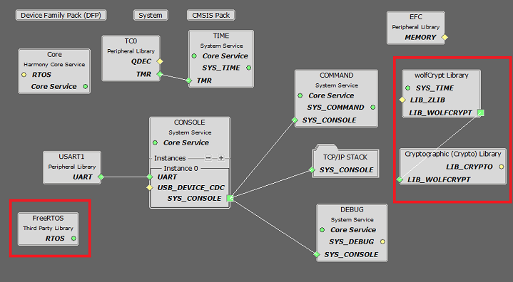
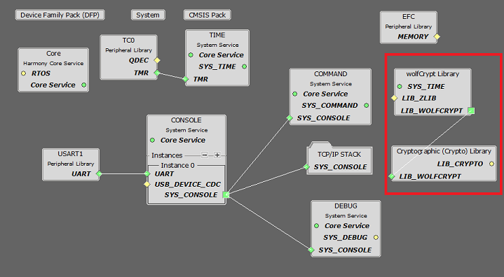
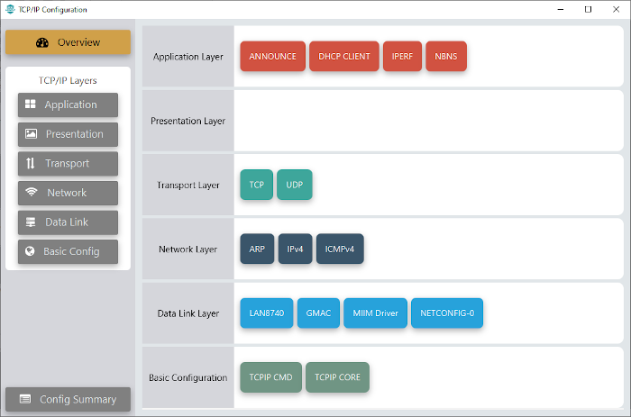
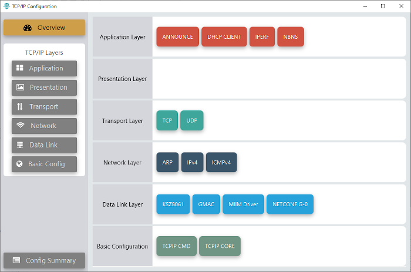
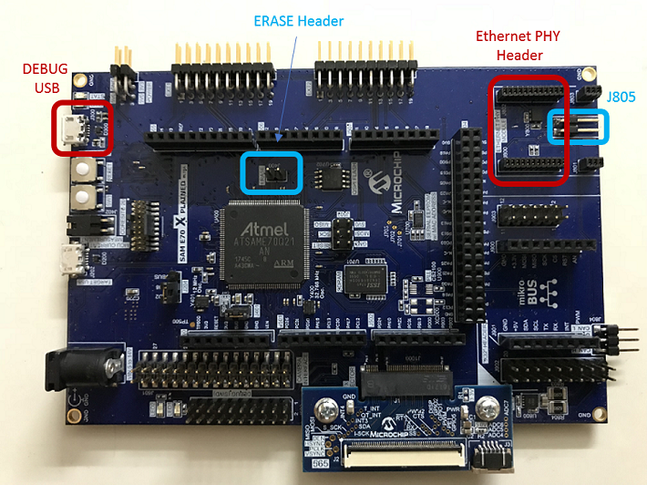
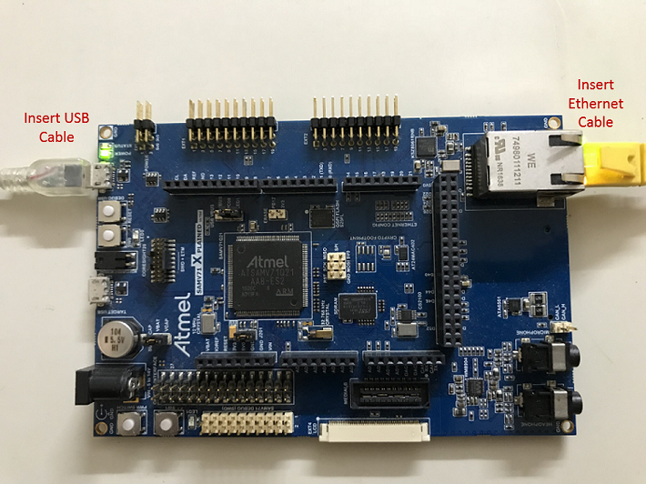
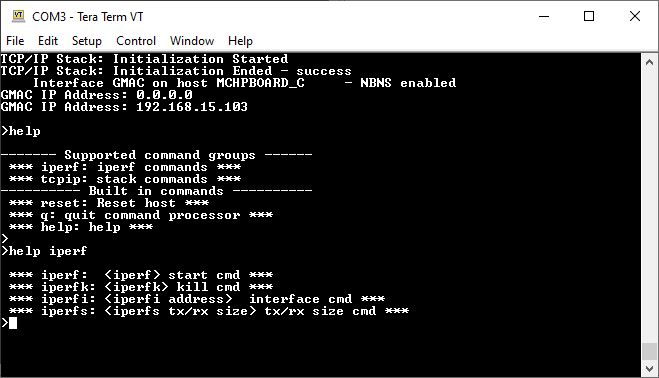

1.6 TCP/IP IPERF Application
IPERF is a standard networking tool that helps to measure networking bandwidth and performance.
The iperf demo creates an application that can be used for running iperf and measuring the network performance.
TCP/IP IPERF Application MCC Configuration
The following Project Graph diagram shows the Harmony components included in the IPERF demonstration application.
MCC is launched by selecting Tools > Embedded > MPLAB® Code Configurator from the MPLAB X IDE and after opening the project, TCP/IP demo project is ready to be configured and regenerated.
TCP/IP Root Layer Project Graph
The root layer project shows that USART1 peripheral is selected to do read and write operation for TCP/IP commands.
This is the basic configuration with SYS_CONSOLE, SYS_DEBUG and SYS_COMMAND modules. These modules are required for TCP/IP command execution.
FreeRTOS component is required for RTOS application. For bare-metal (non-RTOS) FreeRTOS component should not be selected.
NOTE - The above diagram contains FreeRTOS component and that is required for RTOS application. For bare-metal(non-RTOS) FreeRTOS component shouldn't be selected.
TCP/IP Configuration
SAM E70 Xplained Ultra
SAM V71 Xplained Ultra

TCP/IP Required Application
TCP/IP demo use these application module components for this demo.
Announce module to discover the Microchip devices within a local network.
DHCP Client module to discover the IPv4 address from the nearest DHCP Server.
NBNS NetBIOS Name Service protocol associates host names with IP addresses. This assign of human-name host names to access boards on the same subnet.
IPERF module is used to run the network benchmark program.
The default sizes of the Iperf RX and TX buffers are set to 4KB. The performance of a socket is highly dependent on the size of its buffers. So it's a good idea to use as large as possible buffers for the sockets that need high throughput. Bigger buffers will help obtain higher performance numbers.
The other iperf parameters could be left with their default values.
For a description of the parameters see the Iperf Module of the TCP/IP Library.
TCPIP Data Link Layer
Internal ethernet driver(gmac) is enabled with the external LAN8740 PHY driver library for SAME70 demonstartion.
For SAM V71 demonstration , LAN8061 PHY driver ia selcted along with GMAC Internal ethernet driver.
The MIIM Driver supports asynchronous read/write and scan operations for accessing the external PHY registers and notification when MIIM operations have completed.
TCP/IP IPERF Application Hardware Configuration
This is the section describes the hardware configuration for ATSAM E70/V71 Xplained Ultra Evaluation Kit and one can be used for the respective application demonstration.
This section describes the required default hardware configuration use SAM E70 Xplained Ultra Evaluation Kit
Ensure ERASE jumper is Open.
Open the J805 Jumper
Refer to the SAM E70 Xplained Ultra User Guide
Insert the LAN8740 PHY daughter board on the ETHERNET PHY MODULE header.
Connect the micro USB cable from the computer to the DEBUG USB connector on the SAM E70 Xplained Ultra Evaluation Kit
Establish a connection between the router/switch with the SAM E70 Xplained Ultra Evaluation Kit through the RJ45 connector

This section describes the required default hardware configuration use SAM V71 Xplained Ultra Evaluation Kit
No hardware related configuration or jumper setting changes are necessary
Ensure ERASE jumper is Open
Refer to the SAM V71 Xplained Ultra User Guide

Connect the micro USB cable from the computer to the DEBUG USB connector on the SAM V71 Xplained Ultra Evaluation Kit
Establish a connection between the router/switch with the SAM V71 Xplained Ultra Evaluation Kit through the RJ45 connector

TCP/IP IPERF Running Application
This table list the name and location of the MPLAB X IDE project folder for the demonstration.
| Project Name | Target Device | Target Development Board | Description |
|---|---|---|---|
| sam_e70_xult.X | ATSAME70Q21B | SAME70 Xplained Ultra + LAN8740 PHY Daughter board | Demonstrates the IPERF application on development board with ATSAME70Q21B device and LAN8740 PHY daughter board. This implementation is based on Bare Metal ( non-RTOS). |
| sam_e70_xult_freertos.X | ATSAME70Q21B | SAME70 Xplained Ultra + LAN8740 PHY Daughter board | Demonstrates the IPERF application on development board with ATSAME70Q21B device and LAN8740 PHY daughter board. This implementation is based on Freertos. |
| sam_v71_xult.X | ATSAMV71Q21B | SAMV71 Xplained Ultra | Demonstrates the IPERF application on development board with ATSAMV71Q21B device and KSZ8061 PHY daughter board. This implementation is based on Bare Metal (non-RTOS). |
| sam_v71_xult_freertos.X | ATSAMV71Q21B | SAME70 Xplained Ultra | Demonstrates the IPERF application on development board with ATSAMV71Q21B device and KSZ8061 PHY daughter board. This implementation is based on Freertos. |
Running Demonstration Steps
Build and download the demonstration project on the target board.
If the board has a UART connection:
A virtual COM port will be detected on the computer, when the USB cable is connected to USB-UART connector.
Open a standard terminal application on the computer (like Hyper-terminal or Tera Term) and configure the virtual COM port.
Set the serial baud rate to 115200 baud in the terminal application.
See that the initialization prints on the serial port terminal.
When the DHCP client is enabled in the demonstration, wait for the DHCP server to assign an IP address for the development board. This will be printed on the serial port terminal.
Alternatively: Use the Announce service or ping to get the IP address of the board.
Run tcpip_discoverer.jar to discover the IPv4 and IPv6 address for the board.
Execution:
When the DHCP client is enabled in the demonstration, wait for the DHCP server to assign an IP address for the development board.
Use the Announce service or ping to get the IP address of the board.
Test and Output:
The iperf demo is interactive, using a set of special iperf commands that are supported by the standard set of TCP/IP commands.
Pressing "help iperf" at the command prompt displays the list of the available iperf commands/options:

A brief description of the most important settings/commands follows:
"iperf": starts the iperf session. Use "iperf -s" for a server connection or "iperf -c address" for a client connection
Look at the Iperf Module for examples of iperf benchmarks
"iperfk" kills an ongoing iperf test. This is mainly useful for killing a iperf server waiting for connections. But the command could be also used to abort client test.
"iperfi -a address" allows to set the interface to use for iperf when the test is run on a multi-interface host. When multiple iperf instabces are used, the extra parameter "-i" could be used to specify the iperf index to which the command refers to.
"iperfs" command could be used to set the socket TX or RX buffer size dynamically. For example:
"iperfs -tx 2048"
Note:
The iperf demo uses very few TCP/IP modules, to minimize the stack overhead and to obtain good throughput numbers.
However ICMP server, NBNS and Announce modules are enabled to assist in the discovery of the board on the network.
DHCP client is also enabled for acquiring a valid IP address within the network.
Some of these modules could be further disabled if they are not used in the specific network environment of the application.
The data throughput could vary dependent on the iperf socket settings and the network conditions.
Larger TX and RX buffers will increase the corresponding throughput.
Various devices on the network on the link between the board and the machine running the iperf application (switches, routers, etc.) could also affect the throughput.
User can eliminate these effects by connecting the board running the iperf demo directly to the machine running the test on the PC side (Linux, Windows, etc.)